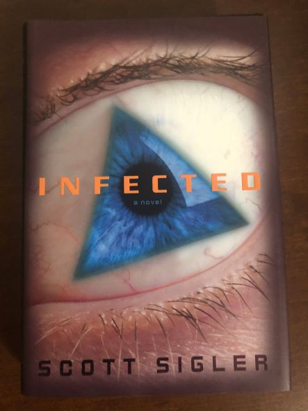
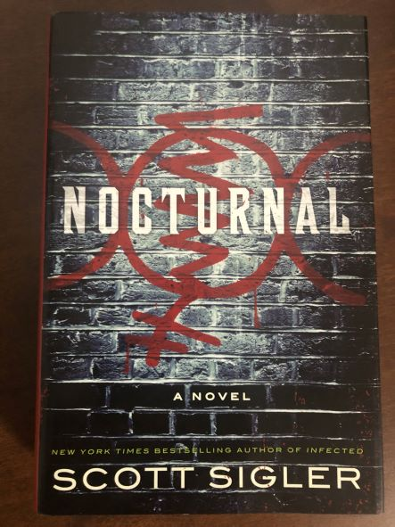

Sigler Social:
Get your fix:
Books in the Modern Era
Books in the modern era take place in "real time" by publication date.
Scott's modern era books have one foot firmly entrenched in current (or perhaps just a little bit beyond) science. He taps into his loyal group of "secret agents" to ensure that the books are just real enough that someone versed the topic of a book won't point at the screen and say "You can't race away from a pyroclastic flow in a truck!" (I'm looking at you, Dante's Peak!)
Beyond the science fiction backdrop, there's always an element of horror. What happens when that animal you've genetically engineered to grow organs for transplant isn't so docile? Or what happens when the disease causing those triangular growths on your body starts to talk to you ... and flood your mind with chemistry?
Click the book titles or images for links to their respective sites at scottsigler.com for more information!
| Title | Cover | Year | Series | Synopsis |
|---|---|---|---|---|
| Kissyman and the Gentleman | 2010 | Kissyman series | Originally conceived outside the SiglerVerse, Kissyman was tied in to the greater SiglerVerse in 2017. The Kissyman is a former elite Nazi SS commando who abandoned his post, and moves to the USA. The Kissyman stories take place in the late 1940s to early 1950s. | |
| Infected |  | 2008 | Infected Trilogy | Perry Dawsey a former linebacker, with anger issues discovers he has an infection of tiny, but growing triangles that not only talk to him, but feed into his violent tendencies. |
| Contagious | 2008 | Infected Trilogy | The same disease that affected Perry Dawsey is now cropping up across the midwest. A special team is formed to try to stop the disease, which turns its victims into raging killers. | |
| Ancestor | 2010 | Series... forthcoming? |
A biotech company is looking for the ultimate "organ factory." They think they can do it by reverse-engineering evolution itself, creating a creature that's not exactly docile. | |
| Nocturnal |  | 2012 | Series... forthcoming? |
A San Francisco homicide detective Bryan "the Ninja" Clauser starts having dreams which closely resemble the scenes he's sent to investigate. As he and his partner "Pookie Chang" look into these homicides, they discover a whole new underworld to City. |
| Pandemic | 2014 | Infected Trilogy | Several years later, the infection, long thought to have been defeated, has revived and gone global. In a story that eerily predicts mankind's response to the COVID pandemic, the team is back together to finally discover a cure. | |
| Earthcore | 2017 | Sun Symbol | A massive deposit of platinum sits below an isolated Utah mountain. As the Earthcore Mining Corporation tunnels down to the deposit, they discover why it's called "Funeral Mountain." | |
| Mount Fitz Roy | 2020 | Sun Symbol | Clues discovered under Funeral Mountain have led the survivors to a new platinum deposit under Mount Fitz Roy, in the Patagonia range of the Andes, but there's more under that mountain than just the precious metal, and a rival team out to get there first! |